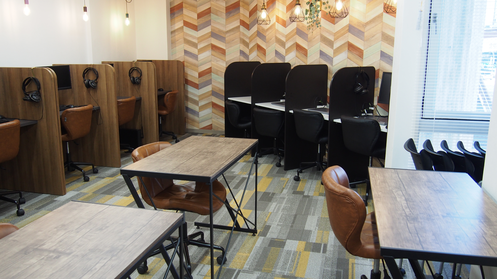
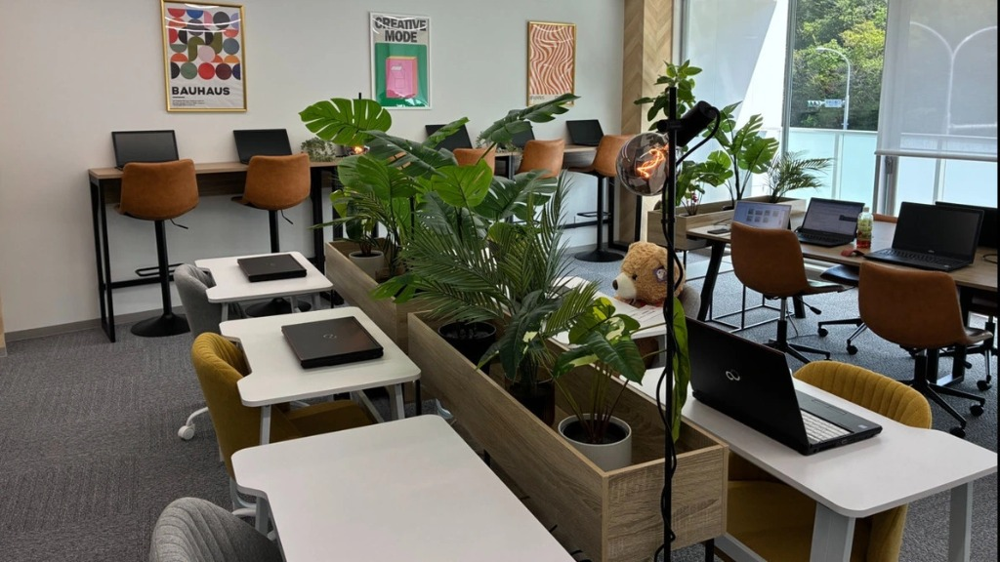
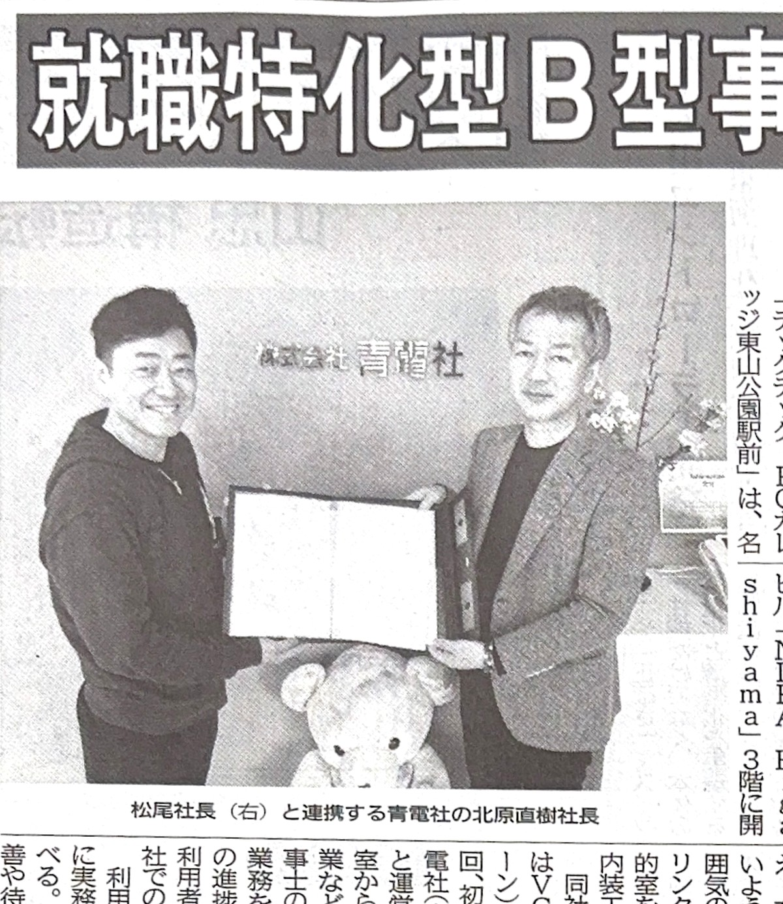

「働きたい」という気持ちの裏にある、さまざまな不安に寄り添います。
ブランクが長く、生活リズムが整っていない。途中で体調を崩してしまわないか心配。
過去に職場で傷ついた経験があり、大勢の中にいたり騒々しいオフィスにいると疲れてしまう。
電源の入れ方や文字入力すらおぼつかず、事務職に就けるようなスキルが全くない。
自分の得意なことや強みが見つからず、社会の中で自信を持てずにいる。
履歴書の書き方や面接、ビジネスマナーなど、就職活動の具体的な進め方に悩んでいる。
通うのに費用がかかるのではないか、しっかり工賃がもらえるのか不安がある。
TECH-techは、焦らず無理なく一歩を踏み出すための「準備期間」です。
苦手なことは苦手のままで大丈夫。あなたのペースで少しずつ自信を積み重ねていきましょう。
「個性 × 得意 × 自分の歩幅」を大切に。未来の選択肢を広げる4つのカリキュラム。
TECH-tech（テックテック）は、PC・Webスキルをはじめとした実践的な学びと温かい居場所を通じて、
一人ひとりの「得意」を伸ばし、社会とのつながりや就職に向けた確かな自信を育む就労継続支援B型事業所です。
基礎から実務まで、履歴書で強みになるスキルを習得。
これからの時代に求められる最新デジタル技術に挑戦。
PCが苦手な日や手先を動かしたい時も安心の選択肢。
企業が求める実務感覚と自信を段階的に身につける。
具体的にどんな一日を過ごすのか、イメージしてみてください。
落ち着いた空間で、それぞれのペースに合わせた個別課題（PC学習や軽作業）を進めます。分からないところは専任スタッフがマンツーマンで丁寧にサポートします。
平安通校では「管理栄養士監修の温かいランチが毎日無料♪」
丸の内校・東山公園校もおしゃれなカフェスペースやラウンジでゆっくり休憩。通う楽しみを大切にしています。
午前の作業の続きや、デザイン・動画制作、スタッフとの個別面談など。「できた！」を少しずつ増やしていきましょう。
一日の作業や感じたことを日報にまとめます。小さな成長を言葉にして振り返り、次への自信につなげます。
※週1日・午前のみなどの短時間利用も大歓迎です。体調に合わせて柔軟に調整できます。
通いやすさ、設備、街の雰囲気から、ぴったりの校舎を選べます。


「2つの校舎を見比べてみたい」「送迎エリアを確認したい」など、複数校舎のご案内も可能です。まずはお気軽にご相談ください。
実際に通われている利用者様と、ご家族からのメッセージです。
前職で人間関係に悩み、しばらく家に引きこもっていました。最初はパソコンも文字入力ができる程度でしたが、個別ブースで自分の課題に集中でき、スタッフさんも優しく教えてくれるので安心しました。今はMOS資格取得に向けて前向きに通えています。
電車に乗るのが苦手で外に出るのが怖かったのですが、自宅近くまで送迎していただけるのが本当に助かっています。毎日メニューの違う温かいランチが無料で食べられるのも通う楽しみです。シール貼りや軽作業から始めて、少しずつPCも覚えています。
見学に伺ったとき、福祉施設とは思えないほど明るくおしゃれなカフェのような空間に驚きました。娘も『ここなら通ってみたい』と自分から言い出しました。スタッフさんが体調の波を丁寧に見てくださり、今では生活リズムが整って家族みんなで安心しています。
地域社会や企業と連携した新しい就労支援のモデルとして注目されています。

TECH-techの「経営コンサル会社と連携した実務体験」や「一人ひとりの個性に合わせた就労支援」の取り組みが、大手ビジネス紙「中部経済新聞」に大きく取り上げられました。
公的機関や地域の提携企業からも確かな信頼をいただきながら、利用者の皆様が本当に必要とされるスキルを身につけられる環境を整備しています。
見学から利用開始まで、スタッフが丁寧にサポートいたします。
LINE、Webフォーム、お電話からお気軽にご連絡ください。ご希望の校舎をお伺いします。
実際の教室の雰囲気を見学。不安なことや希望の働き方を丁寧にお聞きします（ご家族同伴OK）。
実際のPC操作や軽作業を体験。あなたに合わせた「個別カリキュラム」をご提案します。
自治体への申請手続きもスタッフが全面サポート。週1日・短時間から無理なくスタート！
ご利用を検討されている方からよくいただくご質問です。
いきなり進路を決める必要はありません。
まずは教室の雰囲気を見に来て、スタッフとお話ししてみませんか？
あなたの「やってみたい」という気持ちを、全力で応援します。